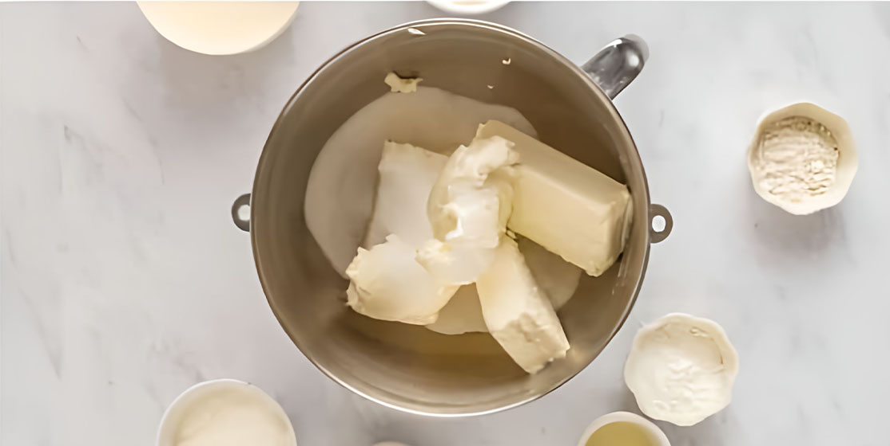
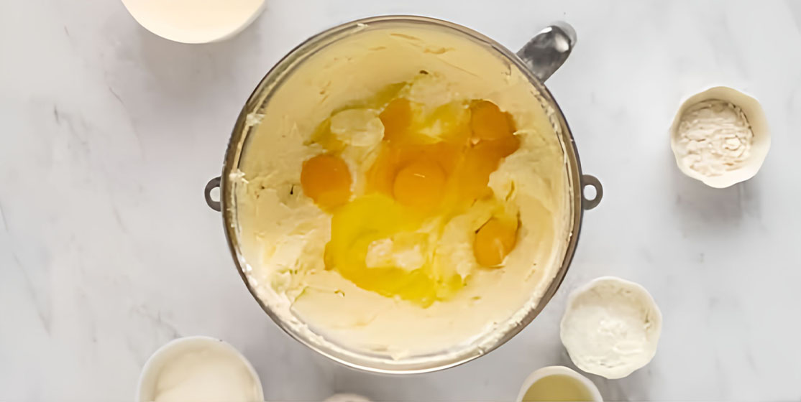
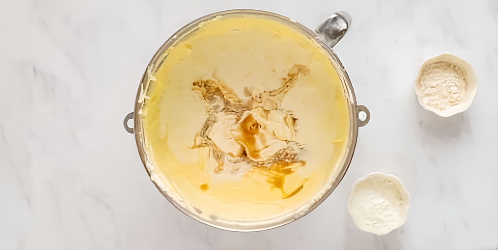
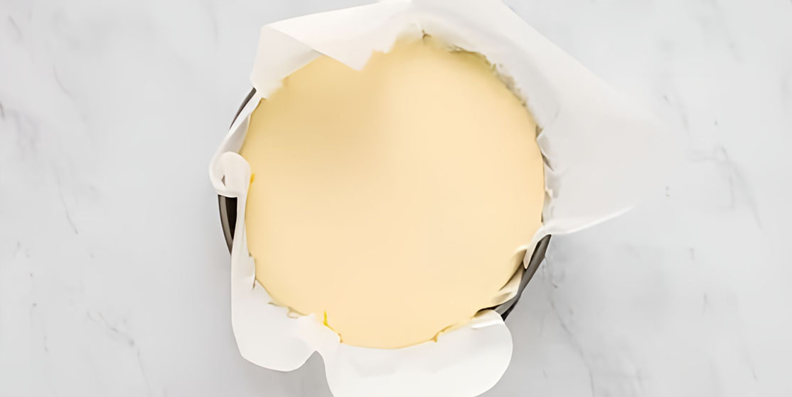
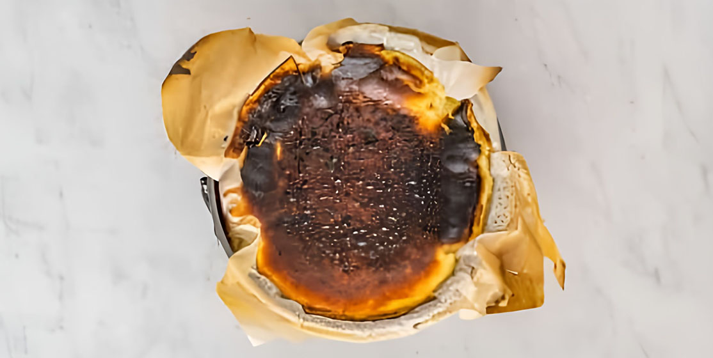

1. Preheat & Prep Pan
Preheat to 450°F (230°C). Line your 8-inch pan with parchment paper, letting it rise above the rim for easy removal.
A creamy, caramelized cheesecake with a lemon twist
Preheat to 450°F (230°C). Line your 8-inch pan with parchment paper, letting it rise above the rim for easy removal.
Beat cream cheese until smooth, then add sugar until fluffy.
Add eggs one at a time, then sour cream, lemon juice, and heavy cream. Mix gently to combine.
Whisk a bit of batter with flour and salt, then fold into the rest.
Pour batter into pan. Bake cheesecake and sugared lemon slices for 25–35 minutes until golden but slightly jiggly.
Remove foil from lemons, bake 5 more minutes. Cool cheesecake fully, then chill for 2+ hours or overnight.
Let the cheesecake rest 30 minutes at room temperature before cutting. Serve with candied lemon slices.
Adapted from Food52